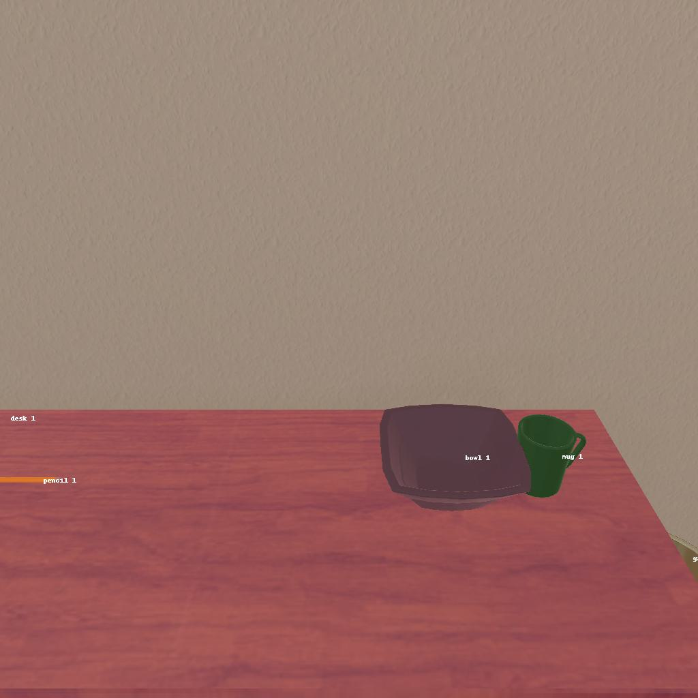

---------------------------------------------------------task: 2---------------------------------------------------------
--------------------------------------------------------------------------------------------------------------------------------------------------------------------
--------------------------------------------------------------------------------------------------------------------------------------------------------------------
Step:--------------------------------------------------------------------------16-------------------------------------------------------------------------------
----------------------------------------
VLM Prompt:
Image1:
**Instruction**
1. Analyze the provided image to identify all visible household objects, focusing on those relevant to the task description "look at pen under the desklamp."
2. Use the analysis of the image and the task hint "The agent must find an object of the desired type, locate and turn on a light source with the desired object in-hand." to answer the question: what is the most reasonable action in the choices for the task description "look at pen under the desklamp"?
4. Decide and write the answer using the template: The answer is: (i): , where i is the real number. If there is no desired object in the image, search every place based on **Initial Observation** to find the object. And if no one is exactly correct, choose a similar answer.
**Initial Observation**
You are in the middle of a room. Looking quickly around you, you can see bed (1-2), dresser (1), drawer (1-11), sidetable (1-2), desk (1), garbagecan (1), safe (1)
**Answer Choices**
(1): go to bed 1
(2): go to dresser 1
(3): go to bed 2
(4): go to drawer 2
(5): go to sidetable 2
(6): go to drawer 3
(7): go to drawer 4
(8): go to garbagecan 1
(9): go to drawer 5
(10): go to drawer 6
(11): go to drawer 7
(12): go to drawer 8
(13): go to drawer 9
(14): go to drawer 10
(15): go to drawer 11
(16): go to safe 1
(17): take bowl 1 from desk 1
(18): take mug 1 from desk 1
(19): take pencil 1 from desk 1
(20): examine desk 1
**Answer**
Let's think step by step by following the instructions.
----------------------------------------
----------------------------------------
Original Response:
Firstly, we need to identify all visible household objects relevant to the task "look at pen under the desklamp." In the image, we can see a desk labeled "desk 1," a bowl labeled "bowl 1," a mug labeled "mug 1," and a pencil labeled "pencil 1." There is no visible desklamp or pen in the provided image.
Secondly, we must consider the task hint, which implies that the agent needs to find a pen and locate a light source (desklamp) to complete the task. Since the pen is not visible on the desk, we should search every place based on the initial observation to find the pen.
The only action from the answer choices that relates to finding an object on or in the desk is (20): examine desk 1.
Therefore, the most reasonable action for the task description "look at pen under the desklamp" is to first find the pen, which could be on or in the desk.
The answer is: (20): examine desk 1.
----------------------------------------
----------------------------------------
>>> Refine Original VLM Response and Get Pure Action: examine desk 1
----------------------------------------
-----------------------------------------------------------------
Running time: 9.305735111236572 seconds
Total Money: 0.7596300000000001
-----------------------------------------------------------------
-----------------------------------------------------------------
Text Observation:On the desk 1, you see a bowl 1, a mug 1, and a pencil 1.
-----------------------------------------------------------------
UNSUCCEED